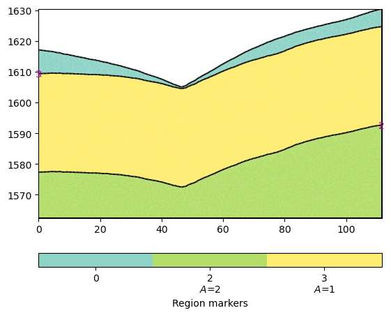
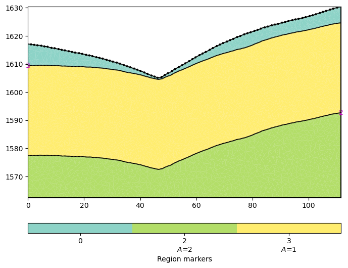
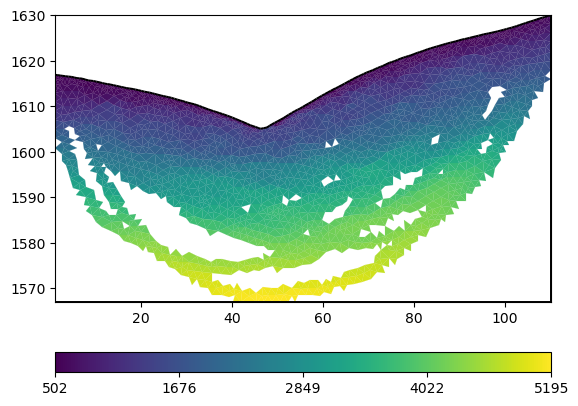
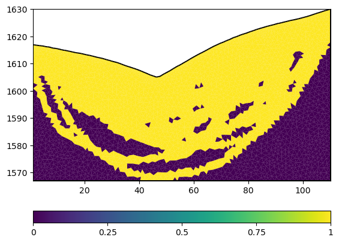
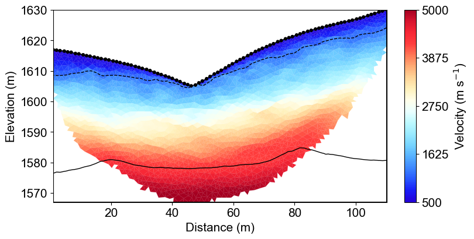

Ex 5. Seismic Refraction Tomography (SRT) Forward Modeling
This example demonstrates seismic refraction tomography forward modeling for watershed structure characterization using PyHydroGeophysX.
The workflow includes:
Converting water content to seismic P-wave velocity using rock physics models
Creating seismic survey geometry along topographic profiles
Forward modeling to generate synthetic travel time data
Seismic tomography inversion to recover velocity structure
Visualization of velocity models and first-arrival picks
SRT is valuable for determining subsurface structure and bedrock interface geometry, which provides important constraints for hydrogeophysical modeling and interpretation of ERT data.
[1]:
import os
import sys
import numpy as np
import matplotlib.pyplot as plt
import pygimli as pg
from pygimli.physics import ert
from pygimli.physics import TravelTimeManager
import pygimli.physics.traveltime as tt
from mpl_toolkits.axes_grid1 import make_axes_locatable
import pygimli.meshtools as mt
# Setup package path for development
try:
# For regular Python scripts
current_dir = os.path.dirname(os.path.abspath(__file__))
except NameError:
# For Jupyter notebooks
current_dir = os.getcwd()
# Add the parent directory to Python path
parent_dir = os.path.dirname(current_dir)
if parent_dir not in sys.path:
sys.path.append(parent_dir)
# Import PyHydroGeophysX modules
from PyHydroGeophysX.model_output.modflow_output import MODFLOWWaterContent
from PyHydroGeophysX.core.interpolation import ProfileInterpolator, create_surface_lines
from PyHydroGeophysX.core.mesh_utils import MeshCreator
from PyHydroGeophysX.petrophysics.velocity_models import HertzMindlinModel, DEMModel
[2]:
output_dir = "C:/Users/HChen8/Documents/GitHub/PyHydroGeophysX/examples/results/seismic_example"
os.makedirs(output_dir, exist_ok=True)
[3]:
print("Step 1: Follow the workflow to create the mesh and model...")
# These would be your actual data files
data_dir = "C:/Users/HChen8/Documents/GitHub/PyHydroGeophysX/examples/data/"
modflow_dir = os.path.join(data_dir, "modflow")
# Load domain information from files
# (Replace with your actual file paths)
idomain = np.loadtxt(os.path.join(data_dir, "id.txt"))
top = np.loadtxt(os.path.join(data_dir, "top.txt"))
porosity = np.load(os.path.join(data_dir, "Porosity.npy"))
Water_Content = np.load(os.path.join(data_dir, "Watercontent.npy"))
water_content = Water_Content[50]
print(water_content.shape)
# Step 3: Set up profile for 2D section
# Define profile endpoints
point1 = [115, 70] # [col, row]
point2 = [95, 180] # [col, row]
# Initialize profile interpolator
interpolator = ProfileInterpolator(
point1=point1,
point2=point2,
surface_data=top,
origin_x=569156.2983333333,
origin_y=4842444.17,
pixel_width=1.0,
pixel_height=-1.0,
num_points = 400
)
# Interpolate water content to profile
water_content_profile = interpolator.interpolate_3d_data(water_content)
# Interpolate porosity to profile
porosity_profile = interpolator.interpolate_3d_data(porosity)
Step 1: Follow the workflow to create the mesh and model...
(14, 194, 157)
[4]:
print("Step 2: Creating geometry for the seismic refraction survey...")
# Load structure layers
bot = np.load(os.path.join(data_dir, "bot.npy"))
# Process layers to get structure
structure = interpolator.interpolate_layer_data([top] + bot.tolist())
# Create surface lines
# Indicate the layer for the structure regolith, fractured bedrock and fresh bedrock
top_idx=int(0)
mid_idx=int(4)
bot_idx=int(12)
surface, line1, line2 = create_surface_lines(
L_profile=interpolator.L_profile,
structure=structure,
top_idx=0,
mid_idx=4,
bot_idx=12
)
# Create mesh
mesh_creator = MeshCreator(quality=32)
mesh, geom = mesh_creator.create_from_layers(
surface=surface,
layers=[line1, line2],
bottom_depth= np.min(line2[:,1])-10 #50.0
)
Step 2: Creating geometry for the seismic refraction survey...
[5]:
pg.show(geom)
[5]:
(<Axes: >, None)

[6]:
numberGeophones = 90
shotDistance = 5
sensors = np.linspace(1,110, numberGeophones)
scheme = pg.physics.traveltime.createRAData(sensors,shotDistance=shotDistance)
# Adapt sensor positions to slope
pos = np.zeros((numberGeophones,2))
for i in range(numberGeophones):
minusx = np.abs(surface[:,0]-sensors[i])
index = np.where(minusx== np.amin(minusx))
new_x = surface[index,0]
new_y = surface[index,1]
pos[i, 0] = new_x
pos[i, 1] = new_y
scheme.setSensors(pos)
C:\Users\HChen8\AppData\Local\Temp\ipykernel_58796\2399746456.py:17: DeprecationWarning: Conversion of an array with ndim > 0 to a scalar is deprecated, and will error in future. Ensure you extract a single element from your array before performing this operation. (Deprecated NumPy 1.25.)
pos[i, 0] = new_x
C:\Users\HChen8\AppData\Local\Temp\ipykernel_58796\2399746456.py:18: DeprecationWarning: Conversion of an array with ndim > 0 to a scalar is deprecated, and will error in future. Ensure you extract a single element from your array before performing this operation. (Deprecated NumPy 1.25.)
pos[i, 1] = new_y
[7]:
sensors
[7]:
array([ 1. , 2.2247191 , 3.4494382 , 4.6741573 ,
5.8988764 , 7.12359551, 8.34831461, 9.57303371,
10.79775281, 12.02247191, 13.24719101, 14.47191011,
15.69662921, 16.92134831, 18.14606742, 19.37078652,
20.59550562, 21.82022472, 23.04494382, 24.26966292,
25.49438202, 26.71910112, 27.94382022, 29.16853933,
30.39325843, 31.61797753, 32.84269663, 34.06741573,
35.29213483, 36.51685393, 37.74157303, 38.96629213,
40.19101124, 41.41573034, 42.64044944, 43.86516854,
45.08988764, 46.31460674, 47.53932584, 48.76404494,
49.98876404, 51.21348315, 52.43820225, 53.66292135,
54.88764045, 56.11235955, 57.33707865, 58.56179775,
59.78651685, 61.01123596, 62.23595506, 63.46067416,
64.68539326, 65.91011236, 67.13483146, 68.35955056,
69.58426966, 70.80898876, 72.03370787, 73.25842697,
74.48314607, 75.70786517, 76.93258427, 78.15730337,
79.38202247, 80.60674157, 81.83146067, 83.05617978,
84.28089888, 85.50561798, 86.73033708, 87.95505618,
89.17977528, 90.40449438, 91.62921348, 92.85393258,
94.07865169, 95.30337079, 96.52808989, 97.75280899,
98.97752809, 100.20224719, 101.42696629, 102.65168539,
103.87640449, 105.1011236 , 106.3258427 , 107.5505618 ,
108.7752809 , 110. ])
[8]:
surface
[8]:
array([[0.00000000e+00, 1.61710999e+03],
[2.80209020e-01, 1.61707541e+03],
[5.60418039e-01, 1.61704084e+03],
[8.40627060e-01, 1.61700626e+03],
[1.12083608e+00, 1.61697142e+03],
[1.40104510e+00, 1.61693614e+03],
[1.68125412e+00, 1.61690086e+03],
[1.96146314e+00, 1.61686017e+03],
[2.24167216e+00, 1.61681384e+03],
[2.52188118e+00, 1.61676857e+03],
[2.80209020e+00, 1.61674079e+03],
[3.08229922e+00, 1.61671009e+03],
[3.36250824e+00, 1.61665758e+03],
[3.64271726e+00, 1.61664185e+03],
[3.92292628e+00, 1.61664021e+03],
[4.20313530e+00, 1.61661251e+03],
[4.48334432e+00, 1.61655780e+03],
[4.76355334e+00, 1.61650308e+03],
[5.04376236e+00, 1.61645275e+03],
[5.32397137e+00, 1.61638858e+03],
[5.60418039e+00, 1.61632010e+03],
[5.88438941e+00, 1.61624758e+03],
[6.16459843e+00, 1.61620382e+03],
[6.44480745e+00, 1.61619412e+03],
[6.72501647e+00, 1.61618443e+03],
[7.00522549e+00, 1.61613490e+03],
[7.28543451e+00, 1.61603435e+03],
[7.56564353e+00, 1.61593281e+03],
[7.84585255e+00, 1.61584782e+03],
[8.12606157e+00, 1.61579019e+03],
[8.40627059e+00, 1.61573437e+03],
[8.68647961e+00, 1.61568705e+03],
[8.96668863e+00, 1.61565875e+03],
[9.24689765e+00, 1.61563703e+03],
[9.52710667e+00, 1.61561010e+03],
[9.80731569e+00, 1.61552819e+03],
[1.00875247e+01, 1.61544628e+03],
[1.03677337e+01, 1.61538955e+03],
[1.06479427e+01, 1.61534227e+03],
[1.09281518e+01, 1.61529499e+03],
[1.12083608e+01, 1.61524508e+03],
[1.14885698e+01, 1.61517143e+03],
[1.17687788e+01, 1.61509778e+03],
[1.20489878e+01, 1.61502457e+03],
[1.23291969e+01, 1.61496227e+03],
[1.26094059e+01, 1.61491654e+03],
[1.28896149e+01, 1.61488082e+03],
[1.31698239e+01, 1.61484509e+03],
[1.34500329e+01, 1.61477382e+03],
[1.37302420e+01, 1.61469606e+03],
[1.40104510e+01, 1.61464460e+03],
[1.42906600e+01, 1.61459620e+03],
[1.45708690e+01, 1.61454740e+03],
[1.48510780e+01, 1.61449861e+03],
[1.51312871e+01, 1.61443222e+03],
[1.54114961e+01, 1.61436200e+03],
[1.56917051e+01, 1.61429218e+03],
[1.59719141e+01, 1.61422236e+03],
[1.62521231e+01, 1.61416743e+03],
[1.65323322e+01, 1.61410317e+03],
[1.68125412e+01, 1.61405150e+03],
[1.70927502e+01, 1.61400178e+03],
[1.73729592e+01, 1.61395739e+03],
[1.76531682e+01, 1.61392352e+03],
[1.79333773e+01, 1.61388965e+03],
[1.82135863e+01, 1.61384518e+03],
[1.84937953e+01, 1.61378815e+03],
[1.87740043e+01, 1.61372827e+03],
[1.90542133e+01, 1.61366706e+03],
[1.93344224e+01, 1.61360652e+03],
[1.96146314e+01, 1.61355339e+03],
[1.98948404e+01, 1.61348907e+03],
[2.01750494e+01, 1.61340849e+03],
[2.04552584e+01, 1.61333136e+03],
[2.07354675e+01, 1.61326250e+03],
[2.10156765e+01, 1.61320171e+03],
[2.12958855e+01, 1.61314092e+03],
[2.15760945e+01, 1.61309839e+03],
[2.18563035e+01, 1.61305967e+03],
[2.21365126e+01, 1.61302096e+03],
[2.24167216e+01, 1.61297056e+03],
[2.26969306e+01, 1.61287341e+03],
[2.29771396e+01, 1.61277626e+03],
[2.32573486e+01, 1.61268210e+03],
[2.35375577e+01, 1.61261534e+03],
[2.38177667e+01, 1.61254853e+03],
[2.40979757e+01, 1.61248000e+03],
[2.43781847e+01, 1.61241146e+03],
[2.46583937e+01, 1.61236116e+03],
[2.49386028e+01, 1.61231191e+03],
[2.52188118e+01, 1.61224028e+03],
[2.54990208e+01, 1.61217273e+03],
[2.57792298e+01, 1.61211429e+03],
[2.60594388e+01, 1.61205585e+03],
[2.63396479e+01, 1.61197793e+03],
[2.66198569e+01, 1.61192373e+03],
[2.69000659e+01, 1.61184028e+03],
[2.71802749e+01, 1.61174985e+03],
[2.74604839e+01, 1.61165780e+03],
[2.77406930e+01, 1.61157194e+03],
[2.80209020e+01, 1.61149341e+03],
[2.83011110e+01, 1.61141213e+03],
[2.85813200e+01, 1.61133656e+03],
[2.88615290e+01, 1.61126612e+03],
[2.91417381e+01, 1.61119567e+03],
[2.94219471e+01, 1.61111806e+03],
[2.97021561e+01, 1.61103034e+03],
[2.99823651e+01, 1.61093870e+03],
[3.02625741e+01, 1.61084542e+03],
[3.05427832e+01, 1.61075778e+03],
[3.08229922e+01, 1.61069553e+03],
[3.11032012e+01, 1.61063329e+03],
[3.13834102e+01, 1.61057108e+03],
[3.16636192e+01, 1.61050502e+03],
[3.19438282e+01, 1.61042355e+03],
[3.22240373e+01, 1.61032628e+03],
[3.25042463e+01, 1.61022902e+03],
[3.27844553e+01, 1.61012729e+03],
[3.30646643e+01, 1.61002522e+03],
[3.33448733e+01, 1.60992314e+03],
[3.36250824e+01, 1.60981597e+03],
[3.39052914e+01, 1.60969692e+03],
[3.41855004e+01, 1.60957788e+03],
[3.44657094e+01, 1.60945883e+03],
[3.47459184e+01, 1.60935825e+03],
[3.50261275e+01, 1.60926667e+03],
[3.53063365e+01, 1.60917635e+03],
[3.55865455e+01, 1.60909118e+03],
[3.58667545e+01, 1.60897626e+03],
[3.61469635e+01, 1.60888451e+03],
[3.64271726e+01, 1.60882304e+03],
[3.67073816e+01, 1.60873414e+03],
[3.69875906e+01, 1.60860832e+03],
[3.72677996e+01, 1.60853499e+03],
[3.75480086e+01, 1.60846167e+03],
[3.78282177e+01, 1.60837074e+03],
[3.81084267e+01, 1.60827517e+03],
[3.83886357e+01, 1.60817960e+03],
[3.86688447e+01, 1.60809281e+03],
[3.89490537e+01, 1.60798117e+03],
[3.92292628e+01, 1.60786912e+03],
[3.95094718e+01, 1.60776061e+03],
[3.97896808e+01, 1.60766496e+03],
[4.00698898e+01, 1.60756387e+03],
[4.03500988e+01, 1.60746278e+03],
[4.06303079e+01, 1.60736168e+03],
[4.09105169e+01, 1.60720271e+03],
[4.11907259e+01, 1.60707823e+03],
[4.14709349e+01, 1.60697101e+03],
[4.17511439e+01, 1.60685358e+03],
[4.20313530e+01, 1.60671012e+03],
[4.23115620e+01, 1.60660044e+03],
[4.25917710e+01, 1.60651258e+03],
[4.28719800e+01, 1.60639228e+03],
[4.31521890e+01, 1.60625485e+03],
[4.34323981e+01, 1.60611741e+03],
[4.37126071e+01, 1.60599656e+03],
[4.39928161e+01, 1.60589156e+03],
[4.42730251e+01, 1.60580021e+03],
[4.45532341e+01, 1.60570886e+03],
[4.48334432e+01, 1.60561507e+03],
[4.51136522e+01, 1.60551761e+03],
[4.53938612e+01, 1.60542015e+03],
[4.56740702e+01, 1.60531745e+03],
[4.59542792e+01, 1.60521113e+03],
[4.62344883e+01, 1.60510686e+03],
[4.65146973e+01, 1.60503764e+03],
[4.67949063e+01, 1.60508343e+03],
[4.70751153e+01, 1.60522338e+03],
[4.73553243e+01, 1.60532357e+03],
[4.76355334e+01, 1.60538897e+03],
[4.79157424e+01, 1.60550832e+03],
[4.81959514e+01, 1.60568278e+03],
[4.84761604e+01, 1.60589261e+03],
[4.87563694e+01, 1.60610243e+03],
[4.90365785e+01, 1.60625184e+03],
[4.93167875e+01, 1.60639386e+03],
[4.95969965e+01, 1.60653587e+03],
[4.98772055e+01, 1.60669631e+03],
[5.01574145e+01, 1.60681679e+03],
[5.04376236e+01, 1.60694354e+03],
[5.07178326e+01, 1.60707796e+03],
[5.09980416e+01, 1.60723842e+03],
[5.12782506e+01, 1.60745566e+03],
[5.15584596e+01, 1.60767291e+03],
[5.18386687e+01, 1.60788946e+03],
[5.21188777e+01, 1.60803064e+03],
[5.23990867e+01, 1.60817183e+03],
[5.26792957e+01, 1.60833959e+03],
[5.29595047e+01, 1.60850665e+03],
[5.32397137e+01, 1.60866023e+03],
[5.35199228e+01, 1.60882989e+03],
[5.38001318e+01, 1.60900618e+03],
[5.40803408e+01, 1.60914496e+03],
[5.43605498e+01, 1.60927155e+03],
[5.46407588e+01, 1.60939814e+03],
[5.49209679e+01, 1.60955605e+03],
[5.52011769e+01, 1.60971067e+03],
[5.54813859e+01, 1.60988471e+03],
[5.57615949e+01, 1.61005874e+03],
[5.60418039e+01, 1.61022113e+03],
[5.63220130e+01, 1.61037188e+03],
[5.66022220e+01, 1.61052262e+03],
[5.68824310e+01, 1.61067337e+03],
[5.71626400e+01, 1.61084230e+03],
[5.74428490e+01, 1.61101388e+03],
[5.77230581e+01, 1.61117678e+03],
[5.80032671e+01, 1.61133475e+03],
[5.82834761e+01, 1.61152471e+03],
[5.85636851e+01, 1.61170665e+03],
[5.88438941e+01, 1.61186917e+03],
[5.91241032e+01, 1.61203212e+03],
[5.94043122e+01, 1.61219535e+03],
[5.96845212e+01, 1.61235692e+03],
[5.99647302e+01, 1.61251185e+03],
[6.02449392e+01, 1.61267347e+03],
[6.05251483e+01, 1.61282732e+03],
[6.08053573e+01, 1.61298116e+03],
[6.10855663e+01, 1.61313407e+03],
[6.13657753e+01, 1.61328533e+03],
[6.16459843e+01, 1.61343896e+03],
[6.19261934e+01, 1.61359429e+03],
[6.22064024e+01, 1.61373337e+03],
[6.24866114e+01, 1.61387862e+03],
[6.27668204e+01, 1.61402387e+03],
[6.30470294e+01, 1.61416622e+03],
[6.33272385e+01, 1.61428492e+03],
[6.36074475e+01, 1.61440362e+03],
[6.38876565e+01, 1.61454911e+03],
[6.41678655e+01, 1.61470592e+03],
[6.44480745e+01, 1.61487088e+03],
[6.47282836e+01, 1.61503705e+03],
[6.50084926e+01, 1.61520460e+03],
[6.52887016e+01, 1.61536441e+03],
[6.55689106e+01, 1.61551254e+03],
[6.58491196e+01, 1.61565700e+03],
[6.61293287e+01, 1.61579797e+03],
[6.64095377e+01, 1.61594580e+03],
[6.66897467e+01, 1.61610286e+03],
[6.69699557e+01, 1.61625993e+03],
[6.72501647e+01, 1.61639479e+03],
[6.75303738e+01, 1.61651484e+03],
[6.78105828e+01, 1.61663489e+03],
[6.80907918e+01, 1.61676392e+03],
[6.83710008e+01, 1.61690883e+03],
[6.86512098e+01, 1.61703735e+03],
[6.89314189e+01, 1.61716588e+03],
[6.92116279e+01, 1.61729787e+03],
[6.94918369e+01, 1.61743646e+03],
[6.97720459e+01, 1.61755900e+03],
[7.00522549e+01, 1.61765670e+03],
[7.03324640e+01, 1.61776148e+03],
[7.06126730e+01, 1.61787096e+03],
[7.08928820e+01, 1.61798444e+03],
[7.11730910e+01, 1.61809795e+03],
[7.14533000e+01, 1.61821801e+03],
[7.17335091e+01, 1.61835671e+03],
[7.20137181e+01, 1.61849541e+03],
[7.22939271e+01, 1.61861850e+03],
[7.25741361e+01, 1.61872355e+03],
[7.28543451e+01, 1.61882661e+03],
[7.31345542e+01, 1.61893342e+03],
[7.34147632e+01, 1.61906485e+03],
[7.36949722e+01, 1.61921476e+03],
[7.39751812e+01, 1.61936466e+03],
[7.42553902e+01, 1.61950446e+03],
[7.45355992e+01, 1.61960604e+03],
[7.48158083e+01, 1.61969605e+03],
[7.50960173e+01, 1.61978607e+03],
[7.53762263e+01, 1.61987461e+03],
[7.56564353e+01, 1.61996210e+03],
[7.59366443e+01, 1.62009226e+03],
[7.62168534e+01, 1.62022676e+03],
[7.64970624e+01, 1.62035259e+03],
[7.67772714e+01, 1.62045226e+03],
[7.70574804e+01, 1.62054697e+03],
[7.73376894e+01, 1.62064130e+03],
[7.76178985e+01, 1.62073483e+03],
[7.78981075e+01, 1.62082836e+03],
[7.81783165e+01, 1.62092189e+03],
[7.84585255e+01, 1.62100914e+03],
[7.87387345e+01, 1.62109370e+03],
[7.90189436e+01, 1.62117825e+03],
[7.92991526e+01, 1.62126307e+03],
[7.95793616e+01, 1.62135130e+03],
[7.98595706e+01, 1.62143952e+03],
[8.01397796e+01, 1.62154986e+03],
[8.04199887e+01, 1.62167551e+03],
[8.07001977e+01, 1.62179873e+03],
[8.09804067e+01, 1.62190206e+03],
[8.12606157e+01, 1.62198488e+03],
[8.15408247e+01, 1.62207328e+03],
[8.18210338e+01, 1.62216293e+03],
[8.21012428e+01, 1.62225385e+03],
[8.23814518e+01, 1.62234214e+03],
[8.26616608e+01, 1.62243676e+03],
[8.29418698e+01, 1.62257820e+03],
[8.32220789e+01, 1.62271965e+03],
[8.35022879e+01, 1.62282158e+03],
[8.37824969e+01, 1.62289293e+03],
[8.40627059e+01, 1.62295063e+03],
[8.43429149e+01, 1.62301002e+03],
[8.46231240e+01, 1.62309488e+03],
[8.49033330e+01, 1.62317355e+03],
[8.51835420e+01, 1.62325222e+03],
[8.54637510e+01, 1.62332722e+03],
[8.57439600e+01, 1.62339703e+03],
[8.60241691e+01, 1.62349399e+03],
[8.63043781e+01, 1.62359096e+03],
[8.65845871e+01, 1.62367221e+03],
[8.68647961e+01, 1.62374613e+03],
[8.71450051e+01, 1.62381571e+03],
[8.74252142e+01, 1.62388373e+03],
[8.77054232e+01, 1.62396211e+03],
[8.79856322e+01, 1.62403543e+03],
[8.82658412e+01, 1.62410840e+03],
[8.85460502e+01, 1.62417845e+03],
[8.88262593e+01, 1.62424456e+03],
[8.91064683e+01, 1.62431068e+03],
[8.93866773e+01, 1.62437679e+03],
[8.96668863e+01, 1.62445924e+03],
[8.99470953e+01, 1.62454576e+03],
[9.02273044e+01, 1.62463229e+03],
[9.05075134e+01, 1.62471520e+03],
[9.07877224e+01, 1.62478083e+03],
[9.10679314e+01, 1.62484646e+03],
[9.13481404e+01, 1.62490172e+03],
[9.16283495e+01, 1.62494639e+03],
[9.19085585e+01, 1.62498665e+03],
[9.21887675e+01, 1.62505182e+03],
[9.24689765e+01, 1.62513412e+03],
[9.27491855e+01, 1.62522913e+03],
[9.30293946e+01, 1.62531318e+03],
[9.33096036e+01, 1.62538620e+03],
[9.35898126e+01, 1.62545402e+03],
[9.38700216e+01, 1.62550915e+03],
[9.41502306e+01, 1.62556427e+03],
[9.44304397e+01, 1.62561927e+03],
[9.47106487e+01, 1.62568682e+03],
[9.49908577e+01, 1.62577796e+03],
[9.52710667e+01, 1.62586089e+03],
[9.55512757e+01, 1.62594186e+03],
[9.58314847e+01, 1.62599341e+03],
[9.61116938e+01, 1.62603570e+03],
[9.63919028e+01, 1.62607800e+03],
[9.66721118e+01, 1.62612764e+03],
[9.69523208e+01, 1.62618787e+03],
[9.72325298e+01, 1.62625121e+03],
[9.75127389e+01, 1.62632903e+03],
[9.77929479e+01, 1.62638821e+03],
[9.80731569e+01, 1.62644220e+03],
[9.83533659e+01, 1.62651763e+03],
[9.86335749e+01, 1.62659683e+03],
[9.89137840e+01, 1.62666085e+03],
[9.91939930e+01, 1.62672299e+03],
[9.94742020e+01, 1.62678513e+03],
[9.97544110e+01, 1.62686218e+03],
[1.00034620e+02, 1.62695259e+03],
[1.00314829e+02, 1.62704300e+03],
[1.00595038e+02, 1.62713341e+03],
[1.00875247e+02, 1.62720180e+03],
[1.01155456e+02, 1.62726774e+03],
[1.01435665e+02, 1.62733367e+03],
[1.01715874e+02, 1.62740718e+03],
[1.01996083e+02, 1.62750088e+03],
[1.02276292e+02, 1.62759458e+03],
[1.02556501e+02, 1.62769055e+03],
[1.02836710e+02, 1.62779525e+03],
[1.03116919e+02, 1.62790435e+03],
[1.03397128e+02, 1.62798374e+03],
[1.03677337e+02, 1.62805079e+03],
[1.03957546e+02, 1.62816412e+03],
[1.04237755e+02, 1.62827746e+03],
[1.04517964e+02, 1.62837057e+03],
[1.04798173e+02, 1.62845283e+03],
[1.05078382e+02, 1.62853916e+03],
[1.05358591e+02, 1.62862549e+03],
[1.05638800e+02, 1.62871267e+03],
[1.05919009e+02, 1.62879651e+03],
[1.06199218e+02, 1.62887801e+03],
[1.06479428e+02, 1.62895156e+03],
[1.06759637e+02, 1.62904099e+03],
[1.07039846e+02, 1.62913636e+03],
[1.07320055e+02, 1.62924547e+03],
[1.07600264e+02, 1.62935457e+03],
[1.07880473e+02, 1.62945897e+03],
[1.08160682e+02, 1.62954850e+03],
[1.08440891e+02, 1.62961388e+03],
[1.08721100e+02, 1.62967926e+03],
[1.09001309e+02, 1.62977325e+03],
[1.09281518e+02, 1.62986563e+03],
[1.09561727e+02, 1.62993724e+03],
[1.09841936e+02, 1.63000756e+03],
[1.10122145e+02, 1.63007409e+03],
[1.10402354e+02, 1.63014062e+03],
[1.10682563e+02, 1.63021449e+03],
[1.10962772e+02, 1.63028526e+03],
[1.11242981e+02, 1.63033352e+03],
[1.11523190e+02, 1.63038179e+03]])
[9]:
fig = plt.figure(figsize=[8,6])
ax = fig.add_subplot(1,1,1)
pg.show(geom,ax = ax)
pg.viewer.mpl.drawSensors(ax, scheme.sensors(), diam=0.5,
facecolor='black', edgecolor='black')

Step 6: Interpolate data to mesh
[10]:
print("Step 6: Interpolating data to mesh...")
ID1 = porosity_profile.copy()
ID1[:mid_idx] = 0 #regolith
ID1[mid_idx:bot_idx] = 3 # fractured bedrock
ID1[bot_idx:] = 2 # fresh bedrock
# Get mesh centers and markers
mesh_centers = np.array(mesh.cellCenters())
mesh_markers = np.array(mesh.cellMarkers())
# Interpolate porosity to mesh
porosity_mesh = interpolator.interpolate_to_mesh(
property_values=porosity_profile,
depth_values=structure,
mesh_x=mesh_centers[:, 0],
mesh_y=mesh_centers[:, 1],
mesh_markers=mesh_markers,
ID=ID1, # Use ID1 to indicate the layers for interpolation
layer_markers = [0,3,2],
)
# Interpolate water content to mesh
wc_mesh = interpolator.interpolate_to_mesh(
property_values=water_content_profile,
depth_values=structure,
mesh_x=mesh_centers[:, 0],
mesh_y=mesh_centers[:, 1],
mesh_markers=mesh_markers,
ID=ID1, # Use ID1 to indicate the layers for interpolation
layer_markers = [0,3,2],
)
print("Step 7: Calculating saturation...")
# Ensure porosity is not zero to avoid division by zero
porosity_safe = np.maximum(porosity_mesh, 0.01)
saturation = np.clip(wc_mesh / porosity_safe, 0.0, 1.0)
Step 6: Interpolating data to mesh...
Step 7: Calculating saturation...
Step 9: Convert to P wave velocity using petrophysical model
[11]:
print("Step9: Converting to P wave velocity ..")
marker_labels = [0, 3, 2] # top. mid, bottom layers (example values)
# Initialize velocity models
hm_model = HertzMindlinModel(critical_porosity=0.4, coordination_number=6.0)
dem_model = DEMModel()
# Initialize velocity model
velocity_mesh = np.zeros_like(wc_mesh)
top_mask = (mesh_markers == marker_labels[0])
top_bulk_modulus = 30.0 # GPa
top_shear_modulus = 20.0 # GPa
top_mineral_density = 2650 # kg/m³
top_depth = 1.0 # m
# Get Vp values using Hertz-Mindlin model
Vp_high, Vp_low = hm_model.calculate_velocity(
porosity=porosity_mesh[top_mask],
saturation=saturation[top_mask],
bulk_modulus=top_bulk_modulus,
shear_modulus=top_shear_modulus,
mineral_density=top_mineral_density,
depth=top_depth
)
# Use average of high and low bounds
velocity_mesh[top_mask] = (Vp_high + Vp_low) / 2
mid_mask = (mesh_markers == marker_labels[1])
mid_bulk_modulus = 50.0 # GPa
mid_shear_modulus = 35.0 # GPa
mid_mineral_density = 2670 # kg/m³
mid_aspect_ratio = 0.05
# Get Vp values using DEM model
_, _, Vp = dem_model.calculate_velocity(
porosity=porosity_mesh[mid_mask],
saturation=saturation[mid_mask],
bulk_modulus=mid_bulk_modulus,
shear_modulus=mid_shear_modulus,
mineral_density=mid_mineral_density,
aspect_ratio=mid_aspect_ratio
)
velocity_mesh[mid_mask] = Vp
bot_mask = (mesh_markers == marker_labels[2])
bot_bulk_modulus = 55 # GPa
bot_shear_modulus = 50 # GPa
bot_mineral_density = 2680 # kg/m³
bot_aspect_ratio = 0.03
# Get Vp values using DEM model
_, _, Vp = dem_model.calculate_velocity(
porosity=porosity_mesh[bot_mask],
saturation=saturation[bot_mask],
bulk_modulus=bot_bulk_modulus,
shear_modulus=bot_shear_modulus,
mineral_density=bot_mineral_density,
aspect_ratio=bot_aspect_ratio
)
velocity_mesh[bot_mask] = Vp
Step9: Converting to P wave velocity ..
[12]:
mgr = TravelTimeManager()
datasrt = mgr.simulate(slowness=1.0 / velocity_mesh, scheme=scheme, mesh=mesh,
noiseLevel=0.05, noiseAbs=0.00001, seed=1334
,verbose=True)
datasrt.save(os.path.join(output_dir, "synthetic_seismic_data_long.dat"))
21/05/25 - 22:53:56 - pyGIMLi - INFO - Creating refined mesh (secnodes: 2) to solve forward task.
min/max t: 0.002002676198374358 0.06435431843645598
[12]:
1
[13]:
def drawFirstPicks(ax, data, tt=None, plotva=False, **kwargs):
"""Plot first arrivals as lines.
Parameters
----------
ax : matplotlib.axes
axis to draw the lines in
data : :gimliapi:`GIMLI::DataContainer`
data containing shots ("s"), geophones ("g") and traveltimes ("t")
tt : array, optional
traveltimes to use instead of data("t")
plotva : bool, optional
plot apparent velocity instead of traveltimes
Return
------
ax : matplotlib.axes
the modified axis
"""
# Extract coordinates
px = pg.x(data)
gx = np.array([px[int(g)] for g in data("g")])
sx = np.array([px[int(s)] for s in data("s")])
# Get traveltimes
if tt is None:
tt = np.array(data("t"))
if plotva:
tt = np.absolute(gx - sx) / tt
# Find unique source positions
uns = np.unique(sx)
# Override kwargs with clean, minimalist style
kwargs['color'] = 'black'
kwargs['linestyle'] = '--'
kwargs['linewidth'] = 0.9
kwargs['marker'] = None # No markers on the lines
# Plot for each source
for i, si in enumerate(uns):
ti = tt[sx == si]
gi = gx[sx == si]
ii = gi.argsort()
# Plot line
ax.plot(gi[ii], ti[ii], **kwargs)
# Add source marker as black square at top
ax.plot(si, 0.0, 's', color='black', markersize=4,
markeredgecolor='black', markeredgewidth=0.5)
# Clean grid style
ax.grid(True, linestyle='-', linewidth=0.2, color='lightgray')
# Set proper axis labels with units
if plotva:
ax.set_ylabel("Apparent velocity (m s$^{-1}$)")
else:
ax.set_ylabel("Traveltime (s)")
ax.set_xlabel("Distance (m)")
# Invert y-axis for traveltimes
ax.invert_yaxis()
return ax
# Usage
fig, ax = plt.subplots(figsize=(3.5, 2.5), dpi=300)
drawFirstPicks(ax, datasrt)
[13]:
<Axes: xlabel='Distance (m)', ylabel='Traveltime (s)'>

[14]:
TT = pg.physics.traveltime.TravelTimeManager()
mesh_inv = TT.createMesh(datasrt, paraMaxCellSize=2, quality=32, paraDepth = 50.0)
TT.invert(datasrt, mesh = mesh_inv,lam=50,
zWeight=0.2,vTop=500, vBottom=5500,
verbose=1, limits=[300., 8000.])
21/05/25 - 22:54:29 - pyGIMLi - INFO - Found 1 regions.
21/05/25 - 22:54:29 - pyGIMLi - INFO - Found 1 regions.
21/05/25 - 22:54:29 - pyGIMLi - INFO - Creating forward mesh from region infos.
21/05/25 - 22:54:30 - pyGIMLi - INFO - Creating refined mesh (secnodes: 2) to solve forward task.
21/05/25 - 22:54:30 - pyGIMLi - INFO - Create gradient starting model. 500: 5500
21/05/25 - 22:54:30 - pyGIMLi - INFO - Created startmodel from forward operator: 5132, min/max=0.000182/0.002000
21/05/25 - 22:54:30 - pyGIMLi - INFO - Starting inversion.
fop: <pygimli.physics.traveltime.modelling.TravelTimeDijkstraModelling object at 0x000001D073405C10>
Data transformation: <pgcore._pygimli_.RTrans object at 0x000001D061B31E40>
Model transformation (cumulative):
0 <pgcore._pygimli_.RTransLogLU object at 0x000001D07348C740>
min/max (data): 0.0019/0.07
min/max (error): 4.31%/6.13%
min/max (start model): 1.8e-04/0.002
--------------------------------------------------------------------------------
inv.iter 0 ... chi² = 66.64
--------------------------------------------------------------------------------
inv.iter 1 ... chi² = 1.57 (dPhi = 97.33%) lam: 50.0
--------------------------------------------------------------------------------
inv.iter 2 ...
chi² = 0.95 (dPhi = 35.81%) lam: 50.0
################################################################################
# Abort criterion reached: chi² <= 1 (0.95) #
################################################################################
[14]:
5132 [673.3672579699951,...,2874.980476214034]
[15]:
pg.show(mesh_inv,TT.model.array(),coverage=TT.standardizedCoverage())
[15]:
(<Axes: >, <matplotlib.colorbar.Colorbar at 0x1d073491190>)

[16]:
pg.show(mesh_inv,TT.standardizedCoverage())
[16]:
(<Axes: >, <matplotlib.colorbar.Colorbar at 0x1d07343f390>)

[17]:
cov = TT.standardizedCoverage()
cov.shape
[17]:
(5132,)
[18]:
pos = np.array(mesh_inv.cellCenters())
pos.shape
[18]:
(5132, 3)
[19]:
pos
[19]:
array([[ 36.12750231, 1608.75753297, 0. ],
[ 38.19073967, 1607.8251757 , 0. ],
[ 23.84872037, 1611.51893545, 0. ],
...,
[ 24.54225938, 1592.24720629, 0. ],
[ 24.02779913, 1592.48937184, 0. ],
[ 23.54598117, 1591.88863013, 0. ]])
[20]:
import numpy as np
import matplotlib.pyplot as plt
from scipy import ndimage
from scipy.interpolate import griddata
def fill_holes_2d(pos, cov, grid_resolution=100):
"""
Fill holes (0 values) surrounded by 1 values in 2D scattered data.
Parameters:
-----------
pos : ndarray of shape (n, 3)
Position array where first two columns are x,y coordinates
cov : ndarray of shape (n,)
Coverage values at each point (0 or 1)
grid_resolution : int
Resolution of the grid for interpolation
Returns:
--------
filled_cov : ndarray of shape (n,)
Updated coverage values with holes filled
"""
# Extract only the first two columns (x, y) from pos
pos_2d = pos[:, :2]
# Extract min and max coordinates for grid boundaries
min_coords = np.min(pos_2d, axis=0)
max_coords = np.max(pos_2d, axis=0)
# Create a regular 2D grid
x = np.linspace(min_coords[0], max_coords[0], grid_resolution)
y = np.linspace(min_coords[1], max_coords[1], grid_resolution)
X, Y = np.meshgrid(x, y)
# Interpolate scattered data to regular grid
grid_points = np.vstack([X.ravel(), Y.ravel()]).T
grid_cov = griddata(pos_2d, cov, grid_points, method='nearest').reshape(X.shape)
# Convert to binary
binary_grid = (grid_cov > 0.5)
# Fill holes using binary_fill_holes from scipy
filled_grid = ndimage.binary_fill_holes(binary_grid)
# Convert back to original data type
filled_grid = filled_grid.astype(float)
# Interpolate back to original scattered points
filled_cov = griddata(grid_points, filled_grid.ravel(), pos_2d, method='nearest')
return filled_cov
# Example usage
# Assuming you have your data loaded as pos and cov
# cov = np.array([0, 1, 0, ...]) # Your original coverage values
# Apply the hole filling function
filled_cov = fill_holes_2d(pos, cov)
[21]:
import meshop
geo = pg.meshtools.createParaMeshPLC(datasrt, quality=34, paraMaxCellSize=0.1,
paraBoundary=0.0,
boundary=0, paraDepth = 50)
meshall = pg.meshtools.createMesh(geo,quality=34,area=0.1)
out = meshop.linear_interpolation(TT.paraDomain, TT.model.array(), meshall)
out = out.array()
# out = meshop.nearest_neighbor_interpolation(TT.paraDomain, TT.model.array(), meshall)
# out = np.array(out)
Cvout= meshop.nearest_neighbor_interpolation(TT.paraDomain, filled_cov, meshall)
pg.show(meshall,out,cMap='jet',coverage=Cvout,label='velocity')
---------------------------------------------------------------------------
ModuleNotFoundError Traceback (most recent call last)
Cell In[21], line 1
----> 1 import meshop
3 geo = pg.meshtools.createParaMeshPLC(datasrt, quality=34, paraMaxCellSize=0.1,
4 paraBoundary=0.0,
5 boundary=0, paraDepth = 50)
7 meshall = pg.meshtools.createMesh(geo,quality=34,area=0.1)
ModuleNotFoundError: No module named 'meshop'
[22]:
def createTriangles(mesh):
"""Generate triangle objects for later drawing.
Creates triangle for each 2D triangle cell or 3D boundary.
Quads will be split into two triangles. Result will be cached into mesh._triData.
Parameters
----------
mesh : :gimliapi:`GIMLI::Mesh`
2D mesh or 3D mesh
Returns
-------
x : numpy array
x position of nodes
y : numpy array
x position of nodes
triangles : numpy array Cx3
cell indices for each triangle, quad or boundary face
z : numpy array
z position for given indices
dataIdx : list of int
List of indices for a data array
"""
if hasattr(mesh, '_triData'):
if hash(mesh) == mesh._triData[0]:
return mesh._triData[1:]
x = pg.x(mesh)
y = pg.y(mesh)
z = pg.z(mesh)
# x.round(1e-1)
# y.round(1e-1)
if mesh.dim() == 2:
ents = mesh.cells()
else:
ents = mesh.boundaries(mesh.boundaryMarkers() != 0)
if len(ents) == 0:
for b in mesh.boundaries():
if b.leftCell() is None or b.rightCell() is None:
ents.append(b)
triangles = []
dataIdx = []
for c in ents:
triangles.append([c.node(0).id(), c.node(1).id(), c.node(2).id()])
dataIdx.append(c.id())
if c.shape().nodeCount() == 4:
triangles.append([c.node(0).id(), c.node(2).id(), c.node(3).id()])
dataIdx.append(c.id())
mesh._triData = [hash(mesh), x, y, triangles, z, dataIdx]
return x, y, triangles, z, dataIdx
[23]:
meshall.save(os.path.join(output_dir, 'velmesh'))
np.save(os.path.join(output_dir, 'Vinvmodel.npy'), out)
np.save(os.path.join(output_dir, 'Vsensmodel.npy'), Cvout)
---------------------------------------------------------------------------
NameError Traceback (most recent call last)
Cell In[23], line 1
----> 1 meshall.save(os.path.join(output_dir, 'velmesh'))
2 np.save(os.path.join(output_dir, 'Vinvmodel.npy'), out)
3 np.save(os.path.join(output_dir, 'Vsensmodel.npy'), Cvout)
NameError: name 'meshall' is not defined
[24]:
x, y, triangles, _, dataIndex = createTriangles(mesh_inv)
z = pg.meshtools.cellDataToNodeData(mesh_inv,TT.model.array())
[25]:
params = {'legend.fontsize': 15,
#'figure.figsize': (15, 5),
'axes.labelsize': 15,
'axes.titlesize':16,
'xtick.labelsize':15,
'ytick.labelsize':15}
import matplotlib.pylab as pylab
pylab.rcParams.update(params)
plt.rcParams["font.family"] = "Arial"
from palettable.lightbartlein.diverging import BlueDarkRed18_18
fixed_cmap = BlueDarkRed18_18.mpl_colormap
fig = plt.figure(figsize=[8,9])
ax1 = fig.add_subplot(1,1,1)
pg.show(mesh_inv,TT.model.array(),cMap=fixed_cmap,coverage = filled_cov,ax = ax1,label='Velocity (m s$^{-1}$)',
xlabel="Distance (m)", ylabel="Elevation (m)",pad=0.3,cMin =500, cMax=5000
,orientation="vertical")
ax1.tricontour(x, y, triangles, z, levels=[1200], linewidths=1.0, colors='k', linestyles='dashed')
ax1.tricontour(x, y, triangles, z, levels=[4300], linewidths=1.0, colors='k', linestyles='-')
pg.viewer.mpl.drawSensors(ax1, datasrt.sensors(), diam=0.9,
facecolor='black', edgecolor='black')
fig.savefig(os.path.join(output_dir, 'seismic_velocity_long.tiff'), dpi=300, bbox_inches='tight')

[26]:
x, y, triangles, _, dataIndex = createTriangles(meshall)
z = pg.meshtools.cellDataToNodeData(meshall,out)
---------------------------------------------------------------------------
NameError Traceback (most recent call last)
Cell In[26], line 1
----> 1 x, y, triangles, _, dataIndex = createTriangles(meshall)
2 z = pg.meshtools.cellDataToNodeData(meshall,out)
NameError: name 'meshall' is not defined
[27]:
params = {'legend.fontsize': 15,
#'figure.figsize': (15, 5),
'axes.labelsize': 15,
'axes.titlesize':16,
'xtick.labelsize':15,
'ytick.labelsize':15}
import matplotlib.pylab as pylab
pylab.rcParams.update(params)
plt.rcParams["font.family"] = "Arial"
from palettable.lightbartlein.diverging import BlueDarkRed18_18
fixed_cmap = BlueDarkRed18_18.mpl_colormap
fig = plt.figure(figsize=[8,9])
ax1 = fig.add_subplot(1,1,1)
pg.show(meshall,out,cMap=fixed_cmap,coverage = Cvout,ax = ax1,label='Velocity (m s$^{-1}$)',
xlabel="Distance (m)", ylabel="Elevation (m)",pad=0.3,cMin =500, cMax=5000
,orientation="vertical")
ax1.tricontour(x, y, triangles, z, levels=[1200], linewidths=1.0, colors='k', linestyles='dashed')
ax1.tricontour(x, y, triangles, z, levels=[4200], linewidths=1.0, colors='k')
pg.viewer.mpl.drawSensors(ax1, datasrt.sensors(), diam=0.9,
facecolor='black', edgecolor='black')
---------------------------------------------------------------------------
NameError Traceback (most recent call last)
Cell In[27], line 17
15 fig = plt.figure(figsize=[8,9])
16 ax1 = fig.add_subplot(1,1,1)
---> 17 pg.show(meshall,out,cMap=fixed_cmap,coverage = Cvout,ax = ax1,label='Velocity (m s$^{-1}$)',
18 xlabel="Distance (m)", ylabel="Elevation (m)",pad=0.3,cMin =500, cMax=5000
19 ,orientation="vertical")
22 ax1.tricontour(x, y, triangles, z, levels=[1200], linewidths=1.0, colors='k', linestyles='dashed')
23 ax1.tricontour(x, y, triangles, z, levels=[4200], linewidths=1.0, colors='k')
NameError: name 'meshall' is not defined

[28]:
ttData = tt.load("./results/workflow_example/synthetic_seismic_data.dat")
TT_short = pg.physics.traveltime.TravelTimeManager()
mesh_inv1 = TT_short.createMesh(ttData , paraMaxCellSize=2, quality=32, paraDepth = 30.0)
TT_short.invert(ttData , mesh = mesh_inv,lam=50,
zWeight=0.2,vTop=500, vBottom=5500,
verbose=1, limits=[300., 8000.])
---------------------------------------------------------------------------
RuntimeError Traceback (most recent call last)
Cell In[28], line 1
----> 1 ttData = tt.load("./results/workflow_example/synthetic_seismic_data.dat")
2 TT_short = pg.physics.traveltime.TravelTimeManager()
3 mesh_inv1 = TT_short.createMesh(ttData , paraMaxCellSize=2, quality=32, paraDepth = 30.0)
File ~\anaconda3\envs\pg\Lib\site-packages\pygimli\physics\traveltime\importData.py:30, in load(fileName, verbose, **kwargs)
28 data = readTOMfile(fileName)
29 else:
---> 30 data = DataContainerTT(fileName)
31 # data = pg.DataContainer(fileName, sensorTokens='s g')
33 return data
File ~\anaconda3\envs\pg\Lib\site-packages\pygimli\physics\traveltime\tt.py:39, in DataContainerTT.__init__(self, data, **kwargs)
37 self.registerSensorIndex("g")
38 if isinstance(data, str):
---> 39 self.load(data)
RuntimeError: ./core/src/gimli.cpp:148 int GIMLI::openFile(const std::string&, std::fstream*, std::ios_base::openmode, bool) './results/workflow_example/synthetic_seismic_data.dat': No such file or directory2
[29]:
x1, y1, triangles1, _, dataIndex1 = createTriangles(mesh_inv1)
z1 = pg.meshtools.cellDataToNodeData(mesh_inv1,np.array(TT_short.model))
---------------------------------------------------------------------------
NameError Traceback (most recent call last)
Cell In[29], line 1
----> 1 x1, y1, triangles1, _, dataIndex1 = createTriangles(mesh_inv1)
2 z1 = pg.meshtools.cellDataToNodeData(mesh_inv1,np.array(TT_short.model))
NameError: name 'mesh_inv1' is not defined
[30]:
pos = np.array(mesh_inv.cellCenters())
filled_cov1 = fill_holes_2d(pos, TT_short.standardizedCoverage())
---------------------------------------------------------------------------
NameError Traceback (most recent call last)
Cell In[30], line 2
1 pos = np.array(mesh_inv.cellCenters())
----> 2 filled_cov1 = fill_holes_2d(pos, TT_short.standardizedCoverage())
NameError: name 'TT_short' is not defined
[31]:
params = {'legend.fontsize': 15,
#'figure.figsize': (15, 5),
'axes.labelsize': 15,
'axes.titlesize':16,
'xtick.labelsize':15,
'ytick.labelsize':15}
import matplotlib.pylab as pylab
pylab.rcParams.update(params)
plt.rcParams["font.family"] = "Arial"
from palettable.lightbartlein.diverging import BlueDarkRed18_18
fixed_cmap = BlueDarkRed18_18.mpl_colormap
fig = plt.figure(figsize=[8,9])
ax1 = fig.add_subplot(1,1,1)
pg.show(mesh_inv,TT_short.model.array(),cMap=fixed_cmap,coverage = TT_short.standardizedCoverage(),ax = ax1,label='Velocity (m s$^{-1}$)',
xlabel="Distance (m)", ylabel="Elevation (m)",pad=0.3,cMin =500, cMax=5000
,orientation="vertical")
ax1.tricontour(x1, y1, triangles1, z1, levels=[1200], linewidths=1.0, colors='k', linestyles='dashed')
pg.viewer.mpl.drawSensors(ax1, ttData.sensors(), diam=0.8,
facecolor='black', edgecolor='black')
fig.savefig(os.path.join(output_dir, 'seismic_velocity_short.tiff'), dpi=300, bbox_inches='tight')
---------------------------------------------------------------------------
NameError Traceback (most recent call last)
Cell In[31], line 17
15 fig = plt.figure(figsize=[8,9])
16 ax1 = fig.add_subplot(1,1,1)
---> 17 pg.show(mesh_inv,TT_short.model.array(),cMap=fixed_cmap,coverage = TT_short.standardizedCoverage(),ax = ax1,label='Velocity (m s$^{-1}$)',
18 xlabel="Distance (m)", ylabel="Elevation (m)",pad=0.3,cMin =500, cMax=5000
19 ,orientation="vertical")
22 ax1.tricontour(x1, y1, triangles1, z1, levels=[1200], linewidths=1.0, colors='k', linestyles='dashed')
26 pg.viewer.mpl.drawSensors(ax1, ttData.sensors(), diam=0.8,
27 facecolor='black', edgecolor='black')
NameError: name 'TT_short' is not defined